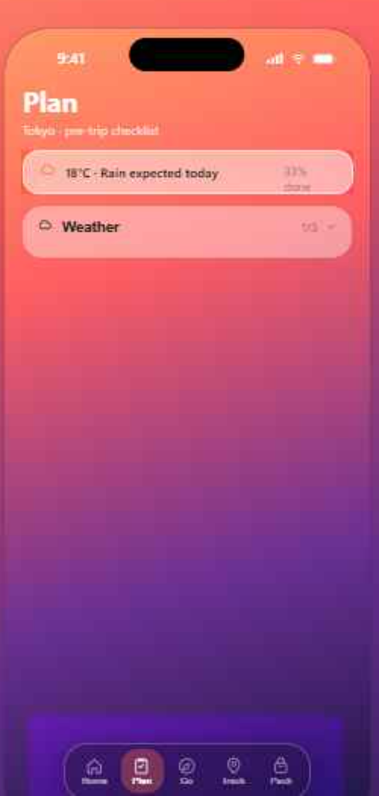
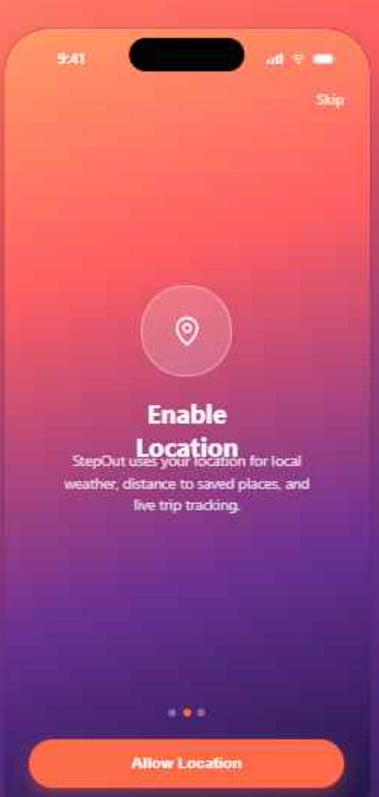
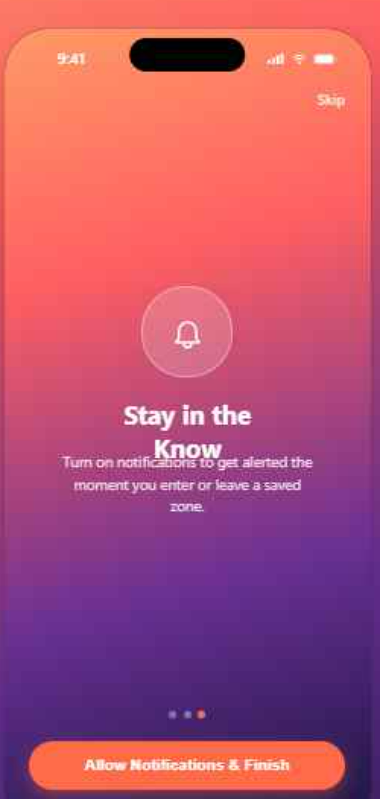
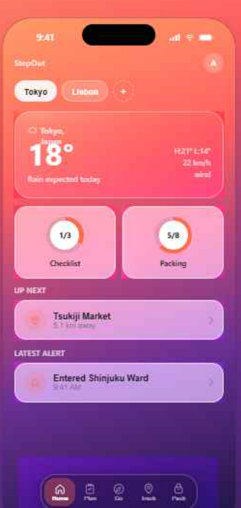

Design Review
StepOut App
A trip-prep companion — Apple Liquid Glass style. First design pass: Onboarding, Home, and Plan.
Visual Language
Apple Liquid Glass
Sunset gradient backdrop
Coral → violet → deep indigo
Frosted glass surfaces
Blur + saturation on every card, sheet, and tab bar
Coral accent
#FF6B4A — actions, progress, alerts
Onboarding · 1 of 3
Welcome
First impression sets the tone: gradient backdrop, a glass icon badge, and one clear action. Dots track progress through the three-step flow.

Onboarding · 2 of 3
Enable Location
Explains the "why" before the OS permission prompt — location powers local weather, distance-to-destination, and live tracking.

Onboarding · 3 of 3
Stay in the Know
Notification permission tied directly to the geofence alert feature it unlocks. Ends the flow, drops into Home.

Home
Trip overview
Trip switcher up top for multiple trips. Weather glass card, progress rings for Checklist and Packing, then surfaced "Up next" destination and latest geofence alert.
Trip chips switch active trip & data
Progress rings summarize Plan & Pack completion
Cards deep-link into Go / Track

Plan
Weather-aware checklist
Current conditions pinned at the top. Checklist grouped into collapsible categories (Weather, Routine, Documents, Other), each with its own completion count.
Collapsible category sections
Swipe-to-delete & drag-to-reorder items (planned)
Weather-flagged items surfaced first

Up Next
Still to design
Go
Map with saved destinations, tap-to-drop-pin, distance & bearing
Track
Live map + geofence enter/exit alert feed
Pack
Inventory with quantity steppers, category icons, search